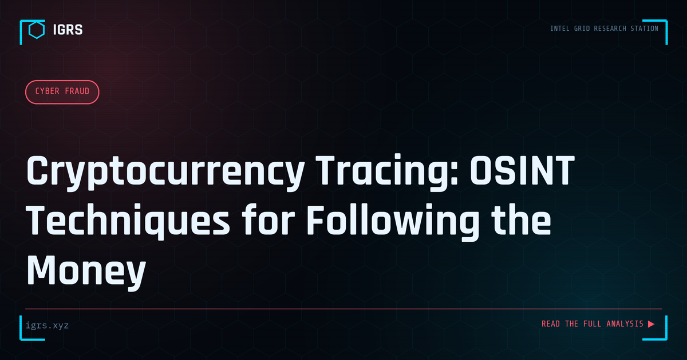

Cryptocurrency Tracing: OSINT Techniques for Following the Money
| File No. | IGRS-032/2026 |
| Subject | Open-source intelligence methodology for tracing cryptocurrency transactions in fraud investigations |
| Category | Cyber Fraud |
| Author | Manuj Kumar Pandey |
| Published | 2026-05-26 |
| Reading time | 12 minutes |
Cryptocurrency's transparency is often misunderstood — blockchain transactions are public by design. How investigators trace funds through wallets, mixers, and exchanges.
The Myth of Untraceable Cryptocurrency
"Crypto is untraceable" is one of the most persistent and dangerous myths in cybercrime. In reality, public blockchains are permanent, transparent ledgers where every transaction is recorded forever and visible to anyone. For investigators, this transparency is a gift — cryptocurrency tracing is often more reliable than tracing cash or even bank transfers. This guide explains the complete methodology of cryptocurrency tracing through OSINT and blockchain analysis.
How Blockchain Transparency Works
Every transaction on a public blockchain like Bitcoin or Ethereum records the sending address, receiving address, amount, and timestamp in an immutable, publicly readable ledger. While addresses are pseudonymous (not directly tied to names), the complete transaction history of every address is open. This means an investigator can follow funds from address to address indefinitely, building a complete picture of money movement.
Essential Blockchain Explorers
| Explorer | Blockchain | Primary Use |
|---|---|---|
| blockchain.com | Bitcoin | BTC transaction and address tracing |
| etherscan.io | Ethereum | ETH and ERC-20 tokens, smart contracts |
| tronscan.org | Tron | USDT-TRC20 (dominant in India fraud) |
| bscscan.com | BNB Chain | BEP-20 tokens |
| blockchair.com | Multi-chain | Cross-chain search and analytics |
The Tracing Workflow
Effective crypto tracing follows a clear path:
- Start with the known address — the victim's wallet or the fraudster's receiving address
- Map outgoing transactions to identify where funds moved
- Follow each hop, noting amounts and timing
- Identify consolidation points where multiple inputs combine
- Trace to the final destination — usually an exchange deposit address
The exchange deposit address is the critical pivot, because exchanges hold KYC data that connects the pseudonymous chain to a real identity.
Address Clustering
Sophisticated tracing uses clustering — grouping addresses controlled by the same entity. Common heuristics include the common-input-ownership heuristic (addresses used together as inputs likely share an owner) and change-address detection. Clustering reveals that what appears to be many separate addresses is actually one operator's wallet network, exposing the true scale of an operation.
Identifying Mixers and Tumblers
Criminals use mixing services and tumblers to obscure the trail by pooling and redistributing funds. While mixers complicate tracing, they leave detectable patterns — characteristic transaction structures, known mixer addresses, and timing signatures. Advanced analysis, including the tools used by Chainalysis and TRM Labs, can often see through basic mixing, and regulatory pressure has shut down several major mixers, exposing historical transactions.
From Address to Identity: The Exchange Pivot
The moment traced funds reach a centralized exchange, attribution becomes possible. The investigator serves legal process — a Section 94 BNSS notice for Indian exchanges or MLAT for international ones — requesting the KYC data tied to the deposit address. This yields the account holder's name, identity documents, bank details, and IP logs, transforming an anonymous trail into an identified suspect.
Commercial vs Free Tracing Tools
| Category | Tools | Best For |
|---|---|---|
| Free explorers | Etherscan, Tronscan, Blockchair | Manual tracing, smaller cases |
| Commercial platforms | Chainalysis, Elliptic, TRM Labs | Clustering, attribution, large investigations |
| Visualization | Maltego with crypto transforms | Network mapping |
The India Context: USDT-TRC20 Dominance
In India, the majority of crypto fraud involves USDT on the Tron network, favoured for low fees and fast settlement. Investigators should prioritise familiarity with Tronscan and TRC-20 token tracing. The FIU-IND registration requirement for exchanges operating in India means domestic exchanges are obligated to cooperate with lawful requests, making the exchange pivot more accessible than in many jurisdictions.
Legal Framework and Evidence
Crypto tracing evidence must be properly preserved: capture transaction hashes, addresses, explorer screenshots, and the full fund-flow analysis, all with a Section 63 BSA 2023 certificate. The applicable offences include Section 318 BNS, PMLA Sections 3/4 for laundering, and IT Act Sections 66C/66D. The immutable nature of blockchain is an evidentiary strength — the ledger is independently verifiable, making well-documented on-chain analysis among the most robust digital evidence available.
Building Crypto Tracing Skills
Proficiency in cryptocurrency tracing comes from practice — following real transactions on public explorers, understanding how different blockchains structure data, recognising exchange and mixer patterns, and learning the legal pathways to convert addresses into identities. As crypto adoption grows in India, this skill is becoming indispensable for financial crime investigators, and the transparency of blockchain ensures that, with the right methodology, the money trail is almost always there to follow.